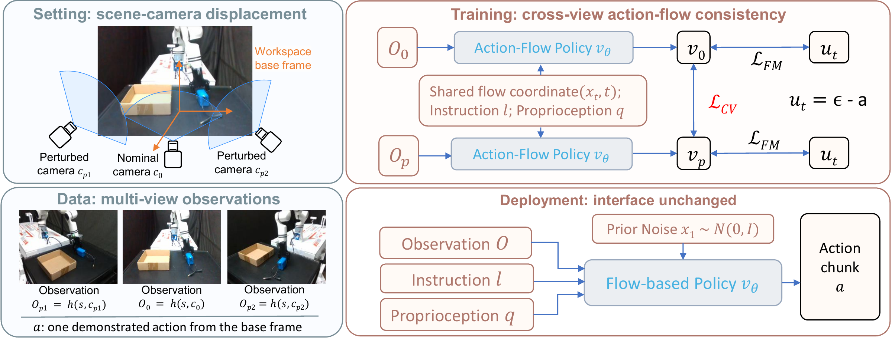
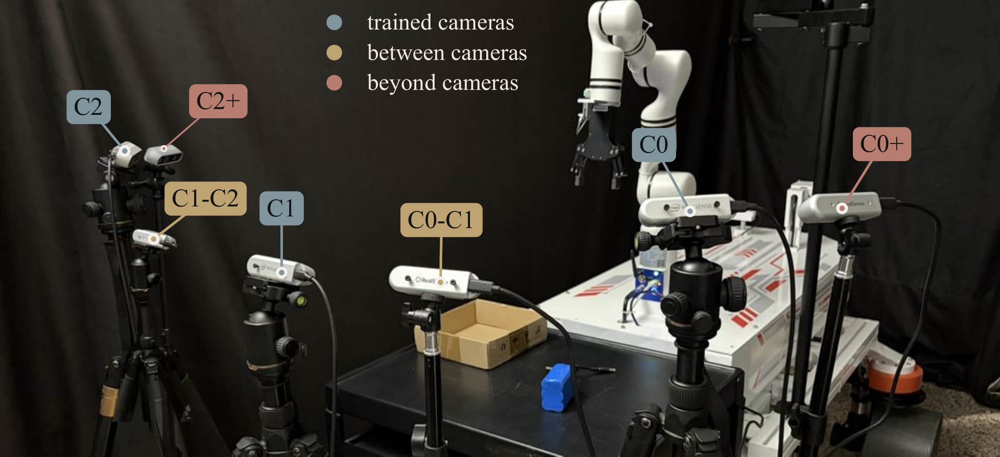
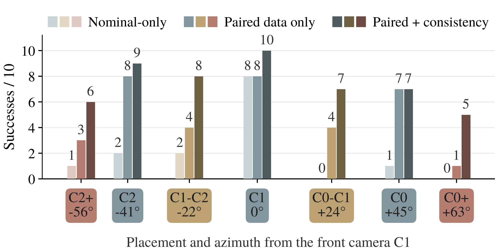
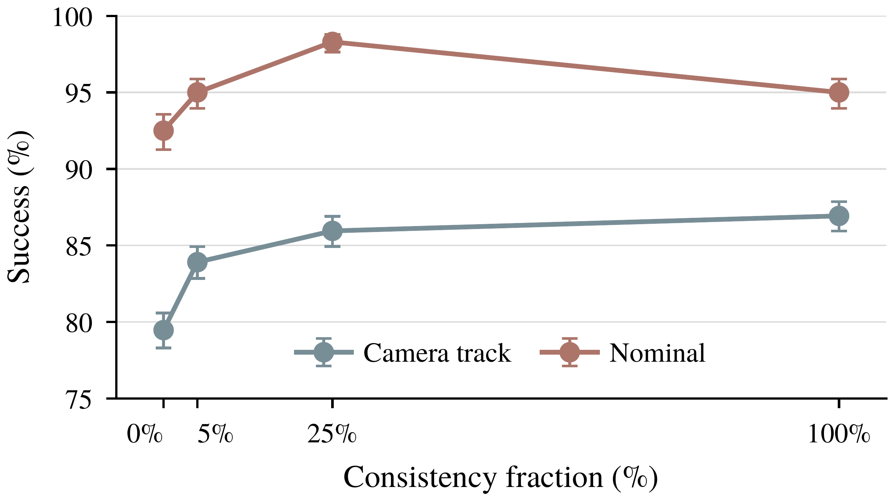
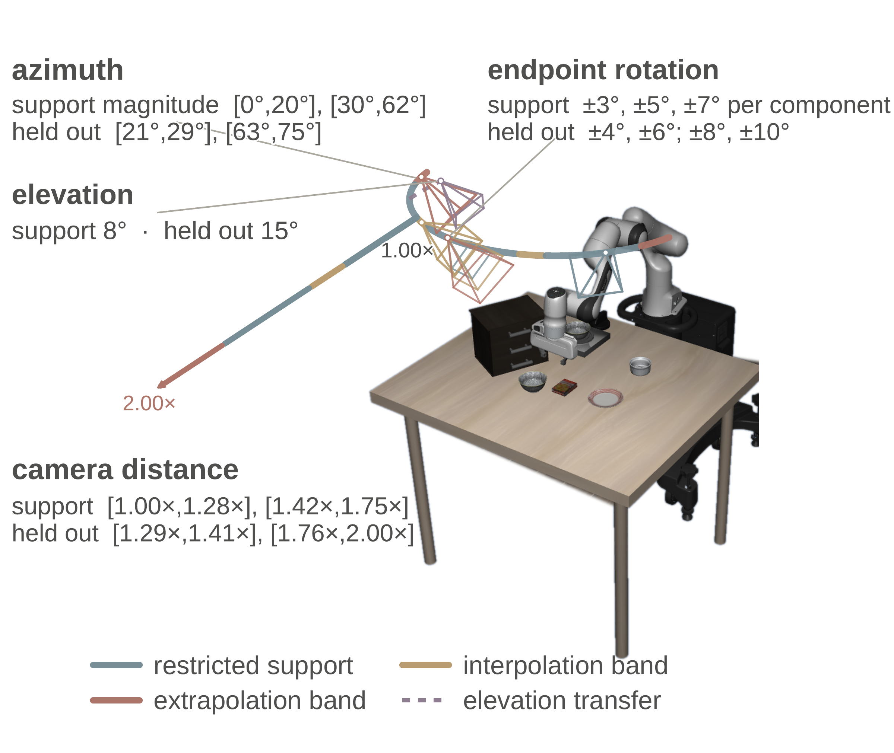
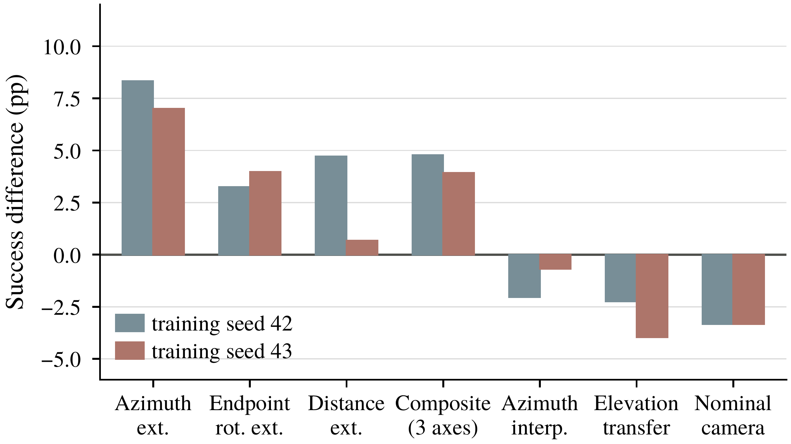
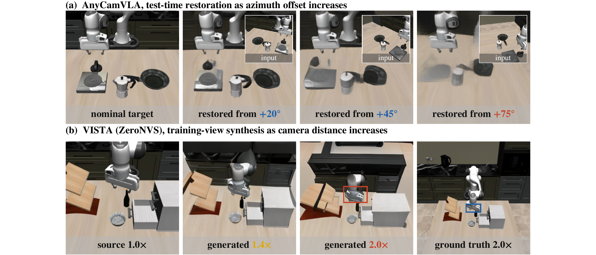

Pair the observations
Two cameras share one physical state, instruction, robot state, and base-frame action label.
Different views of the same state should lead to the same action.
We make this correspondence explicit during training.
87.2% vs. 79.8% · LIBERO-Plus
26/40 vs. 12/40 · Same demonstrations
One scene image · No camera extrinsics
Moving the scene camera changes the image, but not the demonstrated action in the robot base frame. We train both views with flow matching, then explicitly penalize disagreement between their action-flow predictions.

Two cameras share one physical state, instruction, robot state, and base-frame action label.
Evaluate both views with the same noise and flow time. Keep supervision on each view and reduce their prediction discrepancy.
The consistency term is used only in training. No view synthesis, camera-pose input, or extra inference module is needed.
The same network, the same flow coordinate, and the same target action. Only the observation changes.
An RM-75 arm places a battery into a box. Three fixed scene cameras supply the demonstrations; evaluation also moves between those cameras and beyond their outermost viewpoints.

Three RealSense D435i cameras record 98 teleoperated demonstrations. Cross-view observations are matched by timestamp, with a maximum offset of 67 ms, and inherit the same action label.
Both paired methods use exactly these demonstrations. The consistency term is the only difference in their training objective.
“Place the battery into the box.”
Recorded cameras: C0 · C1 · C2
Illustrative rollouts from the teaser material; clips may come from different trials. The quantitative evaluation below uses the same 10 object layouts at every placement. Camera labels follow the paper.

At the recorded cameras, success also increases from 23/30 to 26/30. Across the shared held-out trials, consistency converts 15 baseline failures into successes and reverses only once.
The improvement appears both between recorded cameras and beyond their outer range.
The additional success and failure examples shown in the teaser. Choose an example number to explore all 21 clips. These collections illustrate camera sensitivity; the three-policy comparison is above.
On the LIBERO-Plus camera track, the controlled paired comparison holds the observations, sampler, optimization, and training budget fixed. Adding consistency improves all three camera-perturbation families.
| Training method | Nominal camera | Camera track All | Camera distance | Spherical position | Endpoint rotation |
|---|---|---|---|---|---|
| Nominal-only | 91.1 | 16.8 | 1.1 | 13.2 | 45.7 |
| Mixed-camera | 78.7 | 74.7 | 68.4 | 75.7 | 78.2 |
| Paired data only | 93.6 ± 0.4 | 79.8 ± 0.8 | 72.7 ± 0.2 | 79.9 ± 1.4 | 87.2 ± 0.7 |
| Paired + consistency | 94.2 ± 0.8 | 87.2 ± 0.4 | 81.9 ± 1.0 | 87.9 ± 0.5 | 90.6 ± 0.9 |
| ↳ Shuffled pairs | 50.8 | 25.8 | 19.4 | 25.7 | 33.3 |
| ↳ t²-weighted term | 94.3 | 86.7 | 81.9 | 87.5 | 89.0 |
| ↳ Shared color jitter | 94.9 | 87.2 | 82.7 | 87.7 | 90.4 |
Success (%). ± denotes standard deviation across three training seeds; other rows use one seed. Camera track: 4,797 trials per policy. Nominal evaluation: 2,000 trials. Backbone: π0.5. Full-support training.
Shuffling the partners breaks the action-equivalent structure of each pair and collapses camera-track success to 25.8%. The regularizer needs to know which observations should share an action.
Applying consistency to 5% of training episodes recovers about 60% of the full gain.
Applying it to 25% recovers about 85%. All episodes still receive paired flow matching.

Two views of each rollout. The perturbed scene image is the policy input; the nominal view is shown as a reference.
Put the black bowl in the bottom drawer of the cabinet and close it.
Turn on the stove and put the moka pot on it.
Put the yellow and white mug in the microwave and close it.
With part of the camera-pose range withheld during training, consistency improves extrapolation on azimuth, camera distance, and endpoint rotation in both tested seeds. The largest margin is on azimuth.


Where the gain stops. Elevation is a counterexample: training on 0° ↔ 8° pairs does not improve the held-out 15° view. Restricted-support training also lowers nominal success in both seeds, unlike the full-support setting. The method needs both views to reveal the task-relevant state; consistency alone cannot resolve occlusion.

The paper evaluates test-time restoration with LVSM from AnyCamVLA and training-time substitution with VISTA. Both degrade most on azimuth, where consistency gains most.
| Configuration | Azimuth | Distance | Rotation |
|---|---|---|---|
| Paired, restricted support | 41.0 | 53.5 | 83.6 |
| + Consistency | 49.3 | 58.2 | 86.9 |
| Nominal-only, restored | 3.7 | 45.5 | 61.5 |
| Paired, VISTA substituted | 3.7 | 5.1 | 76.0 |
Success (%) on the same three extrapolation bands, training seed 42. VISTA uses full-support substitution with a quality-guard fallback; collected pairs use restricted support. These are distinct data and deployment settings.
Restoration raises a policy query from 59.8 ms to 151.2 ms on an RTX Pro 6000. Our consistency objective leaves inference unchanged.
Vision-language-action policies fine-tuned from a fixed scene camera can fail when that camera is displaced, although the task, objects, and robot state are unchanged. Camera-diverse demonstrations expose a policy to many viewpoints, but independent supervision does not explicitly state that two images observe one state.
We add that statement to the training objective: action-equivalent observations should agree on the action-flow velocity at shared flow coordinates, while each view retains standard flow matching. The term acts only during training and requires no camera extrinsics.
A same-data study on LIBERO-Plus isolates the gain of this cross-view agreement. Restricted-support experiments test transfer beyond the training poses, and a three-camera real-robot study demonstrates the gain with timestamp-aligned observations. The study evaluates one flow-based backbone, π0.5, and deliberately isolates the scene-camera channel.